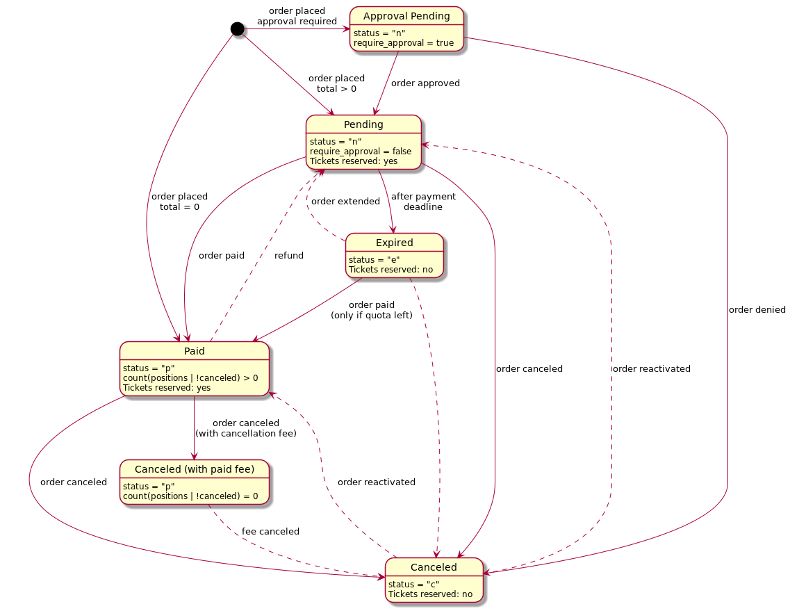

Concepts and Terminology¶
The components¶
The project pretix is split into several components. The main components are:
- base
This is the foundation below all other components. It is primarily responsible for the data structures and database communication. It also hosts several utilities which are used by multiple other components and important parts of the business logic.
- control
This is the web-based backend software which allows organizers to create and manage their events, items, orders and tickets.
- presale
This is the ticket-shop itself, containing all of the parts visible to the end user. Also called “frontend” in parts of this documentation.
- api
A RESTful API exposed to integrate with third-party software.
- plugins
A set of pretix plugins that ship bundled with pretix.
Users and events¶
pretix is all about events, which are defined as something happening somewhere. Every event is managed by the organizer, an abstract entity running the event.
pretix has a concept of users that is used for all people who have to log in to the control panel to manage one or more events. No user is required to place an order.
Items and variations¶
The purpose of pretix is to sell products, e.g. tickets or merchandise for an event. Internally, those products are called items. An item can have multiple variations. For example, the item ‘T-Shirt’ could have the variations ‘S’, ‘M’ and ‘L’.
An item can be extended using questions. Questions enable items to be extended by additional information which can be entered by the user. Examples of possible questions include ‘name’ or ‘age’.
Quotas¶
Every item needs to belong to one or more quotas. The quota contains the information on how many times an item can be sold. A quota can have a limited amount of tickets (e.g. if you have a room that fits a defined maximum number of persons) or it can be unlimited. In the former case, the quota can be available or sold out, in the latter case it is always treated as available.
If an item is assigned to multiple quotas, it can only be bought if all of them still are available. If multiple items are assigned to the same quota, the quota will be counted as sold out as soon as the sum of the two items exceeds the quota limit.
The availability of a quota is currently calculated by subtracting the following numbers from the quota limit:
The number of orders placed for an item that are either already paid or within their granted payment period
The number of non-expired items currently in the shopping cart of users
The number of vouchers defined as “quota blocking” (see blow)
The number of people on the waiting list
The quota system tries very hard to be as friendly as possible to your event attendees while still making sure your limit is never exceeded. For example, when the payment period of an order expires without the order being paid for, the quota will be freed to allow new persons to buy a ticket. However, if you then receive a payment for the expired order, it will be accepted – unless the quota has sold out in the meantime.
Vouchers¶
A voucher is an object that can be used to grant a single user something special, e.g. a reduced price for a product or reserved quota space.
Orders¶
If a customer completes the checkout process, an Order will be created containing all the entered information. An order can be in one of currently six states that are listed in the diagram below:
The dotted lines represent status changes that usually do not happen as part of the regular process, but can be performed manually in the admin backend.
For historical reasons, there are only four valid values of the status field, and the two additional states are
represented differently:
An order is considered canceled (with paid fee) if it is in paid status but does not include any non-cancelled positions.
An order is considered requiring approval if it is in pending status with the
require_approvalattribute set toTrue.